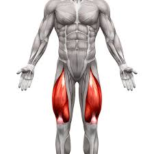
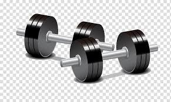
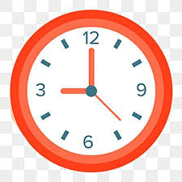

Quad Injury
Diffrent types
The quadriceps muscles occupy the anterior compartment of the thigh and comprise the rectus femoris, vastus medialis, vastus lateralis and vastus intermedius. Proximally, the straight head of the rectus femoris originates from the anterior inferior iliac spine, while the reflected head originates from the groove just above the acetabulum. Distally, these four muscles converge to insert on the superior pole of the patella as the trilaminar quadriceps tendon. Of the quadriceps muscles, the rectus femoris muscle is the most commonly injured. This is thought to be because it crosses both the hip and knee joints, contains a high percentage of type II fibres, and has a complex musculotendinous architecture. learn more
How To treat it
In human anatomy, the quadriceps tendon works with the quadriceps muscle to extend the leg. All four parts of the quadriceps muscle attach to the shin via the patella (knee cap), where the quadriceps tendon becomes the patellar ligament. It attaches the quadriceps to the top of the patella, which in turn is connected to the shin from its bottom by the patellar ligament. A tendon connects muscle to bone, while a ligament connects bone to bone. Injuries are common to this tendon, with tears, either partial or complete, being the most common. If the quadriceps tendon is completely torn, surgery will be required to regain function of the knee. Without the quadriceps tendon, the knee cannot extend. Often, when the tendon is completely torn, part of the kneecap bone will break off with the tendon as well. It can rupture resulting in quadriceps tendon rupture.
learn moreHow long the recovery period is
The tendon can be surgically repaired. Afterwards a brace is given that prevents flexion of the knee. Athletes who have had this injury generally return to action in about 9 months to a year.
learn more